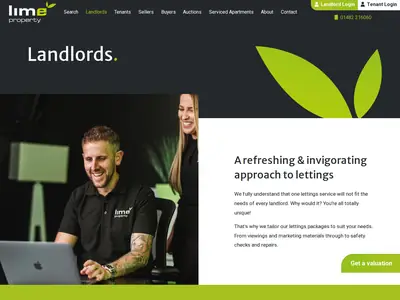
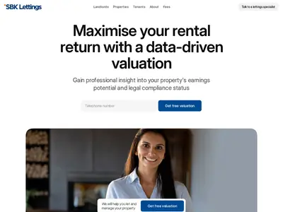
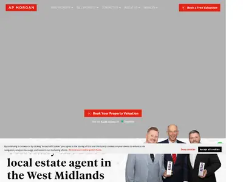

Почему маркетинг собственников у Dwelly вторичен
Модель Dwelly объясняет, почему её маркетинг для собственников выглядит скромно на фоне привлечённых денег. Сооснователь Дан Лифшиц описывает рост так: «Structurally, finding a landlord is pretty hard organically… That's exactly why for us, the roll-up is, in a way, tactically buying a customer base» — «Структурно найти собственника органически довольно трудно… Поэтому для нас скупка — в каком-то смысле тактическая покупка клиентской базы»1. Собственники приходят вместе с агентством, а сайт купленного бренда дальше обслуживает уже знакомый местный рынок.
После покупки агентство сохраняет бренд, сайт, офис и телефон. Центр забирает то, что повторяется во всех брендах: приём заявок, базу рассылок, карточки Google и отчётность. Воронка продавцов агентств живёт отдельно, в M&A-отделе, и маркетинг на неё работает через PR и сообщество владельцев (подразделы ниже). Как Dwelly выбирает и покупает агентства, разобрано в разделе «Как Dwelly покупает агентства».

Что держит центр: формы, CRM, рассылки, карточки Google
Центральные функции Dwelly собраны так, чтобы каждый купленный бренд с первого дня писал заявки и контакты в общую систему. Таблица собрана по сайтам брендов и вакансиям центрального маркетинга.
| Функция | Как у Dwelly | Источник |
|---|---|---|
| Приём заявок | Формы оценки всех брендов («Value my property», «Book a valuation») отправляют заявки в один сервис landingapi.dwelly.group; бренд передаётся параметром (например, agency: eden-harper). Туда же идёт форма оценки агентства с dwelly.group/form | сайты брендов, 23–24.09.2026 |
| Реклама | На сайтах пиксель Meta, у Lime тег Google Ads; платных ключевых запросов в Google UK у dwelly.group, Lime и Eden Harper на 07.10.2026 нет7 | сайты брендов; Semrush |
| База и рассылки | Одна база Mailchimp на все бренды: сегменты «собственник / арендатор», бренд, география, этап; ежемесячные письма собственникам и обновления по регулированию | вакансия CRM & Email Marketing Manager2 |
| Карточки Google | «Manage Google Business Profile across the portfolio» — вести профили Google Business по всему портфелю | та же вакансия2 |
| Роль исполнителя | Внутренняя роль описана как операционная: «This is not a brand-building or campaign management role» — «это не роль по построению бренда или управлению кампаниями». Центральный маркетинг ведёт performance, email и SMM | та же вакансия2 |
| Воронка собственника | «lead → valuation → ToB signed» — лид → оценка → подписан договор управления; оценка — отдельный этап (подробно в разделе «Продажи») | вакансия Commercial Growth Manager2 |
| PR | Внешнее агентство MA Family с 07.2025, «100+ публикаций»; пресс-релиз о каждой сделке | подраздел «PR» ниже |
| Обещания в оффере | Операционные цифры прямо в тексте для собственника: 10 заявок на объект за 3 дня, сдача меньше чем за 2 недели, ремонт около 20 дней; «Compliance is automated 100%… Responsibility is on Dwelly» — «соответствие требованиям автоматизировано на 100%… ответственность на Dwelly»; сроки подрядчиков 2 / 4 / 10 дней | сайты брендов, договор подрядчика |
Единый сервис заявок даёт центру сравнимую картину по всем брендам: откуда пришла заявка, какой бренд, какая форма. Конверсию форм и стоимость заявки по брендам Dwelly не раскрывает.
Оценка объекта как лид-магнит брендов
Лид-магнит — то, что собственник получает в обмен на контакт или чтобы начать разговор. У брендов Dwelly это почти всегда бесплатная оценка; различаются её варианты и момент, когда просят контакты.
| Бренд | Лид-магнит | Стадия решения | Что требуют |
|---|---|---|---|
| Lime Property (Hull) | Оценка в трёх вариантах: «Free Instant Estimate» по данным сделок; «Free Remote Valuation» — фото и ответ по почте «usually within 48 hours» — обычно в течение 48 часов; «Free Valuation Visit» — визит. Премиальный тариф: «Free Rent Guarantee & Legal Protection», «Free RRA compliance support», дополнительные осмотры | решение | контакты; вариант на выбор |
| AP Morgan | «Instant Online Property Valuation… less than 60 seconds»; результат только после ввода телефона и почты: «Please supply us with a valid phone number and email address and we'll send this to you!»; на странице 6 вопросов FAQ с разметкой | решение | тип оценки, адрес, телефон, почта |
| SBK Lettings | «Tenancy Health Check» для собственника, который сдаёт сам, «in three simple steps»; гайд и листовка для собственника; гарантия аренды «Up to 10 weeks' protection, completely free for landlords» | осознание → рассмотрение | на главной — только телефон |
| Goodwin | «Book a Free Valuation», гайд «Client Money Protection Guide» | решение / доверие | — |
| Number 1 Letting | «Lettings Questionnaire» — анкета перед оценкой | решение | — |
| HC Lettings | «Book a valuation» на каждой странице района | решение | — |
| Eden Harper | Форма оценки | решение | заявка в общий сервис с меткой бренда |
| dwelly.group (продавцы агентств) | «Get a free valuation» агентства; оценка вручную по шести факторам, калькулятора нет | решение | имя, компания, число объектов в полном управлении, почта, телефон (на снимке — необязательный) |
Страницы сняты 23–24.09.20263456. Для собственника, который сдаёт сам, есть отдельные магниты: проверка договора у SBK и гайды. Конверсия магнитов брендов не раскрыта, формы не отправлялись. Варианты Lime выстроены по цене входа: мгновенная оценка ничего не требует, удалённая — фото и почту, визит — время собственника.







Трафик сайтов брендов
Трафик показывает, сколько собственников бренды Dwelly могут получить сами, без покупки. Объём — порядка городского агентства с одним-двумя офисами, платной поисковой рекламы на дату среза нет ни у одного из трёх проверенных доменов.
| Домен | Роль | Ключевых запросов в органике | Визитов из поиска в месяц | Платных запросов |
|---|---|---|---|---|
| dwelly.group | сайт группы, воронка продавцов агентств | 58 | 1 146 | 0 |
| lime-property.co.uk | бренд, Hull, ~1 000 объектов, первая покупка 09.2024 | 405 | 2 694 | 0 |
| edenharper.com | бренд, форма оценки идёт в общий сервис Dwelly | 295 | 695 | 0 |
Semrush, база UK, 07.10.20267. Данные по остальным брендам не получены. На ~1 000 объектов Lime приходится около 2,7 визита из поиска на объект в месяц (расчёт). В долгосрочной аренде UK запрос «letting agents + город» массовый, поэтому органика брендов держится на местных запросах и карточках Google (гипотеза).
Трафик dwelly.group (SimilarWeb, июль–сентябрь 2026)
Трафик сайта группы показывает, кто приходит на dwelly.group и куда уходит дальше. Данные — весь мир, все виды трафика, с поддоменами, за июль–сентябрь 2026 года, сняты 07.10.202610. По каналам и исходящим переходам аудитория сайта группы — владельцы агентств, которые думают о продаже, и кандидаты на работу; арендаторы и собственники объектов обслуживаются на сайтах брендов (гипотеза). Платной рекламы и медийных рекламодателей у dwelly.group за период не найдено.
Объём и динамика
Визиты росли каждый месяц после анонса раунда B 28.07.2026: +25,8% в августе и +17,25% в сентябре. В сентябре рост дал почти целиком десктоп (+42,6%), мобильные визиты почти не изменились (+0,35%). Связь роста с раундом — гипотеза: публикации о раунде и вакансии приводят инвесторов, кандидатов и владельцев агентств, которые читают с рабочего компьютера.
| Месяц | Визиты | К прошлому месяцу | Десктоп | Мобильные |
|---|---|---|---|---|
| Июль 2026 | 31 467 | — | — | — |
| Август 2026 | 39 584 | +25,8% | ~15 830 (расчёт) | ~23 750 (расчёт) |
| Сентябрь 2026 | 46 412 | +17,25% | 22 578 (+42,6%) | 23 834 (+0,35%) |
| Всего за 3 месяца | 117 463 |
| Показатель | Значение |
|---|---|
| Визитов в месяц в среднем | 39 154 |
| Уникальных посетителей в месяц | 17 458 |
| Аудитория без повторов между устройствами | 15 337 |
| Новые / вернувшиеся посетители | 69% / 31% |
| Длительность визита | 02:16 |
| Страниц за визит | 2,52 |
| Отказы (уход после одной страницы) | 45,49% |
| Просмотров страниц | 98 829 (сходится со средним месяцем: 39 154 × 2,52 ≈ 98 700, расчёт) |
| Устройства | десктоп 43,01%, мобильный веб 56,99% |
| Место в мире / в Великобритании / в отрасли Business Services | #688 852 / #55 179 / #5 148 |
Около 2,2 визита на уникального посетителя в месяц и 31% вернувшихся (расчёт по данным выше) — заметная доля людей приходит повторно. Гипотеза: это кандидаты, которые возвращаются к вакансиям, и владельцы агентств, которые изучают Hall of Fame и форму оценки.
Страны
| Страна | Доля визитов |
|---|---|
| Великобритания | 65,11% |
| Австралия | 8,58% |
| США | 4,62% |
| Индия | 3,68% |
| Канада | 2,99% |
Две трети визитов — из Великобритании, где находятся все агентства группы. США — страна инвесторов и американских публикаций о раундах; Индия, Австралия и Канада могут давать кандидаты на удалённые инженерные роли и читатели англоязычной прессы (гипотеза).
Каналы
| Канал | Доля визитов | Что внутри |
|---|---|---|
| Прямые заходы | 45,20% | адрес набран вручную или из закладок, переходы из писем и приложений без метки |
| Органический поиск | 24,80% | в сентябре 95% — запросы с названием Dwelly, 5% — без названия |
| Переходы с других сайтов | 22,66% | в основном сайты брендов группы, см. ниже |
| Соцсети без рекламы | 5,74% | LinkedIn — 99,54% этого канала |
| Почта | 1,57% | рассылки |
| Платный поиск | 0,01% | — |
| Медийная реклама | 0,01% | — |
| ИИ-ассистенты (Gen AI) | 0,01% | переходы из ChatGPT, Perplexity и подобных |
| Реклама в соцсетях | 0 | — |
| Партнёрские программы | 0 | — |
Почти весь поиск — по названию компании: человек уже знает о Dwelly из прессы, LinkedIn или от своего агентства и ищет сайт. Запросы без названия дают ~5% поиска, то есть около 1,2% всех визитов (расчёт). Привлечения за деньги у сайта группы нет: платный поиск, медийная реклама и реклама в соцсетях в сумме дают 0,02%.
Откуда переходят и куда уходят
| Сайт-источник перехода | Доля переходов | Что это |
|---|---|---|
| lime-property.co.uk | 52,27% | бренд группы, Hull |
| pennington-online.co.uk | 18,73% | бренд группы, Ипсвич |
| brookdale-pms.co.uk | 18,14% | бренд группы |
| org62.lightning.force.com | 7,30% | внутренний Salesforce |
| прочие | 2,67% |
Три сайта брендов дают 89% переходов на сайт группы. При 22,66% доли канала это около 26 600 переходов за три месяца, из них с Lime ~13 900, или ~4 600 в месяц (расчёт). По отраслям сайтов-источников 36,87% приходится на недвижимость. Гипотеза: на сайтах брендов стоит ссылка на группу (подвал, страница «о нас» или формы), и часть собственников и арендаторов брендов попадает на dwelly.group оттуда.
| Куда уходят с dwelly.group | Доля исходящих переходов | Что это |
|---|---|---|
| job-boards.eu.greenhouse.io | 87,16% | вакансии Dwelly |
| linkedin.com | 8,70% | |
| luma.com | 3,00% | регистрация на хакатон |
| synthesia.io | 1,13% | сервис видео с ИИ-аватарами |
Почти девять из десяти уходящих с сайта переходят к вакансиям. Гипотеза: сайт группы работает как канал найма и M&A — кандидаты идут на Greenhouse, владельцы агентств смотрят Hall of Fame и оставляют заявку на оценку агентства. Число заявок на оценку SimilarWeb не показывает.
Сайты брендов в предыдущем подразделе оценены Semrush только по поиску в UK, сайт группы здесь — SimilarWeb по всему трафику. По Semrush Lime получает 2 694 визита из поиска в месяц; по SimilarWeb с Lime на сайт группы приходит ~4 600 переходов в месяц (расчёт). Такая разница возможна, если на Lime много прямых заходов текущих клиентов, которых поиск не учитывает (гипотеза).
PR: публикация о каждой сделке
PR Dwelly работает в первую очередь на поиск следующего продавца: владелец агентства видит в отраслевой прессе, кто покупает и что стало с проданными компаниями. Вторая аудитория — инвесторы, третья — кандидаты на найм.
| Элемент | Факт |
|---|---|
| Агентство | MA Family с 07.2025, «100+ публикаций» (кейс агентства) |
| Сделка = новость | 60 публикаций о сделках за 09.2024–09.2026, ≈3,3 на каждую из ~18 сделок (расчёт) |
| Где выходят сделки | Property Industry Eye — 12, The Negotiator — 10, Letting Agent Today — 6, PropertyWire — 4, Business Sale — 4, TheBusinessDesk — 3, Property Soup — 3, Bdaily — 3, Proptech Connect — 2, брокер Atomic — 2; по одной: PYMNTS, The Intermediary, Crunchbase, Adam J Walker, East Midlands Business Link, BusinessCloud, LandlordZone, Dealroom News, Accountancy Today, Estate Agent Today, PrimeResi |
| Ритм | отраслевая пресса получает каждую сделку; региональная деловая пресса — по региону сделки; брокер публикует свой кейс |
| Раунды | Эксклюзив Fortune 25.02.2026 (раунд A, $93 млн, цитаты основателей)1 + PR Newswire 26.02.2026; Bloomberg 27.05.2026 (переговоры о $200 млн) и 28.07.2026 ($170 млн)8 + 15+ перепечаток 28–29.07.2026 |
| Мнение основателей | 4 колонки, 13 интервью и подкастов |
| Угол истории | «сломанная система»: «If you sell the software, you get one and a half, 2% of the P&L… If you own an agency… 100% of the P&L» — продавая софт, получаешь полтора-два процента прибыли агентства, владея агентством — все сто (Дроздов, Fortune) |
| Аудитории | продавцы агентств (отраслевые СМИ UK), инвесторы (Fortune, Bloomberg), найм (UKTN, TNW) |
| Витрина сделок | страница Hall of Fame на dwelly.group: 20 агентств, 16 500 объектов (подробно в разделе «Компания») |
| Обратная сторона | Startup Fortune: «a clever operating system is worthless if service quality drops the moment a boiler fails» — умная операционная система ничего не стоит, если сервис падает при первой поломке котла9 |
Сама Dwelly в поиске описана третьими лицами: по запросу «Dwelly letting agency acquisitions» первые результаты — The Negotiator (5 материалов) и Property Industry Eye (2), где компанию называют «Lettings proptech» и «Tech-based management firm». Публикации о сделках формируют и то, что о Dwelly находят поисковики и ИИ-ассистенты.
Сообщество владельцев агентств как воронка покупок
У Dwelly отдельный слой маркетинга направлен на продавцов агентств: роль Head of Community описана как «central demand-generation role in Dwelly's M&A department» — центральная роль по генерации спроса в M&A-отделе2. Она стоит отдельно от центрального маркетинга собственников.
«Nurturing owners months or years before they are ready to sell» — прогревать владельцев за месяцы и годы до того, как они будут готовы продать
вакансия Head of Community, Dwelly, снято 24.09.2026
| Элемент | Что у Dwelly | Цитата и перевод |
|---|---|---|
| Аудитория | Владельцы агентств аренды и продажи в UK | «Agency Owner Community» — сообщество владельцев агентств |
| Два мандата | Прогрев воронки покупок; перевод непродающих владельцев в пользователей платформы | «giving owners with no intention of selling a reason to become active users and advocates» — дать владельцам, не собирающимся продавать, повод стать пользователями и сторонниками |
| Офлайн | Региональные круглые столы, ужины, отраслевые события, встречи владельцев | «regional roundtables, dinners, industry-event presence and owner meetups» |
| Содержание встреч | Инсайты, бенчмарки, связи между владельцами, практическая помощь, без продажи | «trust is built well ahead of any pitch» — доверие строится задолго до любого предложения |
| Онлайн | Органический LinkedIn без платной рекламы | «Own Dwelly's organic LinkedIn presence with agency owners» |
| Передача | Три BDM и глава M&A; статус и последнее касание каждого владельца в CRM (HubSpot) | «every owner's engagement status, last touch and next action is visible» |
| KPI | Активный размер сообщества, качество вовлечения, «теплота» воронки, встречи и сделки под влиянием сообщества, активации платформы; оценка по тренду за кварталы | раздел 7 вакансии |
| Брокеры | Atomic (Brookdale, AP Morgan), Adam J Walker (HC Lettings, Goodwin), Letts Acquire (Number 1 Letting); Atomic оценивает портфели в 1,5–2,5 годовых комиссии | сделки по прессе |
| Входящие заявки | Форма «Get a free valuation» с приветствием главы M&A (бывшего владельца Lime Property); оценку делают вручную | dwelly.group |
| Масштаб воронки | 1–3 агентства в месяц, от £100 тыс. до £20–30 млн | вакансия Head of Launch |
Цикл выглядит так: владелец агентства приходит на ужин или круглый стол (бенчмарки, разбор закона Renters' Rights Act) и получает пользу без предложения; остаётся в аудитории LinkedIn и в сегменте CRM; часть владельцев пробует платформу за долю прибыли; часть продаёт агентство, бренд сохраняется; о сделке выходит пресс-релиз и запись в Hall of Fame; следующий владелец видит, что «being with Dwelly is where the best owners are» — с Dwelly лучшие владельцы, и приходит на следующий ужин. Размер сообщества и число сделок под его влиянием Dwelly не раскрывает: модель восстановлена по тексту вакансии.
Видимость брендов Dwelly в поиске и ответах ИИ
Видимость в поиске показывает, находит ли собственник бренд Dwelly сам, без купленной базы. Ответы ChatGPT, Perplexity и Google AI Overviews напрямую не снимались; вместо них проверен поисковый индекс, по которому ассистенты находят источники (поиск из США, 07.10.2026), местные результаты в нём представлены неполно.
| Запрос | Что в первых результатах | Dwelly в выдаче |
|---|---|---|
| best letting agents Hull | Let's Rent Hull (Trustpilot), каталог Grimsby Telegraph | Lime Property — нет |
| best letting agents Nottingham landlords | Walton & Allen (блог о себе и своих наградах) | HC Lettings — нет |
| sell my letting agency UK buyer acquisition | The Negotiator, Ultralets «Thinking of selling your lettings business?» | dwelly.group — нет |
| Dwelly letting agency acquisitions who is Dwelly | The Negotiator (5 материалов), Property Industry Eye (2) | Dwelly описан третьими лицами: «Lettings proptech», «Tech-based management firm» |
| Параметр | Dwelly и бренды |
|---|---|
| llms.txt (файл-описание сайта для ИИ) | dwelly.group и Lime — нет |
| H1 на странице района | HC Lettings «Letting Agents in Arnold» |
| Цена текстом | Lime — тарифы на /landlords |
| Разметка FAQ | AP Morgan — 6 вопросов |
| Разметка компании | dwelly.group: Organization, Person ×3 |
Страницы районов у брендов выглядят как наследие прежних владельцев. Страница HC Lettings «Letting Agents in Arnold» — H1, адрес и часы офиса, два общих абзаца, призыв к оценке, одна уникальная фраза о районе и общий гайд по Ноттингему, около 1 100 слов6. Единого шаблона Dwelly не видно; местный поиск в UK закрывают карточки Google, которые ведёт центр (гипотеза).
Слабые места модели
Схема «покупаем базу, маркетинг поддерживает» имеет предсказуемые слабости, и часть их видна в открытых данных.
- Органика брендов мала. Крупнейший из проверенных брендов получает около 2,7 тыс. визитов из поиска в месяц, по запросам «best letting agents» в своих городах бренды в первых результатах не появляются. Рост без новых покупок зависит от местного офиса и карточек Google.
- Страницы районов не обновлены. Шаблоны прежних владельцев с одной уникальной фразой о районе; единого стандарта нет.
- Обещания в оффере измеримы. «10 заявок за 3 дня», «сдача меньше чем за 2 недели», «ответственность на Dwelly» — каждую цифру собственник проверяет на практике. После сделок средняя оценка в Google Maps у нескольких брендов снизилась (подробно в разделе «Риски»), и эту связь отмечает пресса9.
- Результаты не раскрыты. Конверсия форм, стоимость заявки, размер сообщества и число сделок под его влиянием не публикуются, поэтому эффективность центрального маркетинга со стороны не оценивается.
Открытые вопросы
| Вопрос | Как узнать |
|---|---|
| Какая доля новых собственников брендов приходит через формы оценки, какая — через офис и рекомендации | вопрос в разговоре с Dwelly или бывшими владельцами агентств; публикации о результатах брендов |
| Трафик остальных брендов и доля трафика от запросов об оценке | Semrush UK по всем доменам брендов |
| Сколько сделок пришло через сообщество, брокеров и входящую форму | интервью основателей и главы M&A; пресс-релизы о сделках с указанием брокера |
| Как Dwelly описывают ChatGPT, Perplexity и AI Overviews | ручная проверка запросов из UK |
| Сколько заявок на оценку агентства и откликов на вакансии даёт трафик dwelly.group | вопрос главе M&A и отделу найма; повторный снимок SimilarWeb после следующего раунда или крупной сделки |
| Готовит ли Dwelly единый шаблон сайтов брендов | повторный снимок сайтов брендов через 3–6 месяцев |
Источники
- Dwelly AI roll-up of UK lettings agencies raises $93 million, Fortune, 25.02.2026
- Вакансии Dwelly: CRM & Email Marketing Manager, Commercial Growth Manager, Head of Community, Greenhouse, 24.09.2026
- Lime Property, страница для собственников, lime-property.co.uk, 23–24.09.2026
- AP Morgan, оценка онлайн, apmorgan.co.uk, 23–24.09.2026
- SBK Lettings, sbklettings.co.uk, 23–24.09.2026
- HC Lettings, страницы районов, hclettings.co.uk, 23–24.09.2026
- Semrush, обзор доменов dwelly.group, lime-property.co.uk, edenharper.com (база UK), 07.10.2026
- AI Startup Dwelly Raises $170 Million for Real Estate Rollup, Bloomberg, 28.07.2026
- Dwelly raises $170M to buy up UK letting agencies one by one and run them on AI, Startup Fortune, 07.2026
- SimilarWeb Pro, dwelly.group, 07.2026–09.2026, данные на 07.10.2026